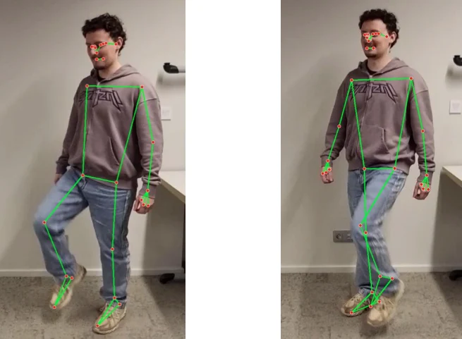
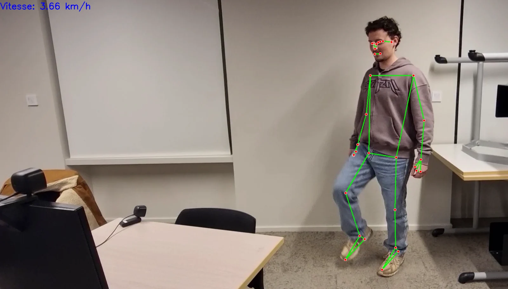

Interaction · Python & Unity
Walking in Place
Transformer les mouvements des jambes filmés en déplacement dans une scène Unity.
- Cadre
- Master · 2024–2025
- Outils
- Python · MediaPipe · Unity
- Format
- Prototype de locomotion
Le projet en bref.
- Le besoin
- Transformer une marche sur place filmée en déplacement d’une caméra virtuelle, pour explorer une commande fondée sur les mouvements du corps.
- Mon rôle
- Relier le suivi des jambes avec Python et MediaPipe au calcul d’une vitesse, puis transmettre cette commande à Unity par UDP.
- Le résultat
- Une chaîne fonctionnelle entre vidéo enregistrée et navigation 3D, avec cinq essais exploratoires. Le lissage du mouvement et l’intégration dans un casque restent à poursuivre.

01 / Contexte et objectif
Contexte et objectif
Walking in Place explore une question simple : comment faire avancer une caméra dans un univers 3D à partir de mouvements de marche, sans utiliser les touches d’un clavier pour commander ce déplacement ? Réalisé dans le cadre du Master Management des technologies interactives 3D, le projet relie l’observation du corps à une action dans Unity. Il s’inscrit dans une réflexion sur les interactions gestuelles et sur la manière de rendre le déplacement virtuel plus proche d’un mouvement physique.
La version présentée utilise une vidéo de marche sur place. L’objectif du prototype est d’identifier les mouvements des jambes, d’en déduire une vitesse et de transmettre cette information à une caméra virtuelle. L’utilisation avec un casque VR et le changement de direction constituent des prolongements possibles ; la réalisation documentée se concentre sur cette première chaîne de traitement.
02 / Du mouvement à la scène 3D
Du mouvement à la scène 3D
Le traitement commence en Python par la lecture de la vidéo et la détection de la posture avec MediaPipe. Les genoux et les chevilles servent de repères : l’évolution de leur position permet d’identifier les mouvements associés aux pas. Le programme estime ensuite une cadence et une longueur de foulée pour produire une valeur de vitesse. Cette valeur reste une approximation destinée au pilotage du prototype, et non une mesure biomécanique calibrée.
La vitesse est envoyée à Unity par UDP, un mode de communication permettant aux deux programmes d’échanger des données. Un script C# reçoit cette valeur, la convertit et l’applique au déplacement de la caméra dans la scène. Le travail consiste donc autant à reconnaître le mouvement qu’à assurer une continuité entre la détection, le calcul et la réponse visuelle. Les schémas et captures du projet permettent de suivre chacune de ces étapes.
- ObserverLire la vidéo et détecter les articulations.
- InterpréterTransformer les mouvements en une vitesse estimée.
- TransmettreEnvoyer cette valeur à Unity par UDP.
- DéplacerFaire avancer la caméra dans la scène.


03 / Développement du prototype
Développement du prototype
Le développement présenté dans mon rapport couvre les différents maillons du prototype : le suivi des jambes en Python, le calcul d’une vitesse, son envoi par UDP et sa réception dans Unity. L’intégration de ces éléments permet de vérifier qu’un mouvement détecté dans la vidéo produit bien un déplacement dans la scène. Le décor sert ici de support à l’expérience : la contribution mise en avant est le lien entre l’analyse du mouvement et la navigation virtuelle.
Les essais ont également permis de prendre du recul sur les réglages. Une variation de détection peut se traduire par une accélération ou un déplacement brusque de la caméra. Observer le suivi et le résultat dans Unity aide à identifier l’origine de ces écarts et à distinguer les difficultés de capture de celles liées au déplacement. Les fichiers de code, les captures et la démonstration conservent les étapes de cette réalisation.
04 / Voir le prototype
Voir le prototype
Le principe : les mouvements des jambes détectés dans une vidéo alimentent le déplacement d’une caméra dans Unity.
05 / Résultats et pistes de travail
Résultats et pistes de travail
Le prototype a permis d’établir une chaîne complète entre une marche filmée et le déplacement d’une caméra virtuelle. Le rapport décrit des essais auprès de cinq personnes, qui ont donné un premier retour sur la réactivité, la fluidité et le ressenti du mouvement. Ces observations montrent l’intérêt du principe tout en faisant ressortir les réglages encore nécessaires. Elles restent des retours exploratoires sur un prototype, avec un nombre limité de participants.
La principale piste d’amélioration concerne le lissage de la vitesse pour réduire les variations brusques. Un calibrage plus précis de la détection et un travail sur les retards permettraient aussi d’améliorer la continuité du mouvement. Le changement de direction, les retours sonores et une intégration dans un casque VR ouvrent ensuite des possibilités d’évolution. Ce projet constitue ainsi une première base pour explorer la navigation à partir du corps.
- Lisser les variations de vitesse pour limiter les mouvements brusques.
- Mieux calibrer la détection et réduire les retards perceptibles.
- Ajouter le changement de direction et explorer ensuite une utilisation avec un casque VR.

Interaction gestuelle · Python & Unity
Naviguer avec les bras
Comparer la marche à trois modes de navigation commandés par les bras.

LIRMM · ÉQUIPE ADVANSE · STAGE DE FIN D’ÉTUDES
Concevoir une expérience VR accompagnée par l’IA.
Découvrir des interactions intégrées à un parcours complet sur Meta Quest.